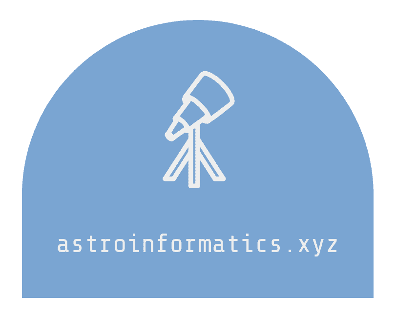

Overview
Introduction
Data Science
Mathematical Foundations
Data Engineering
Data Formats
Research Engineering
Tools of the Trade
Best Practises
Etc.
Acknowledgements
About the Author
All things Astroinfomatics
Docs
»
Data Formats
View page source
Data Formats
¶
In Astronomy .. Parquet Avro..